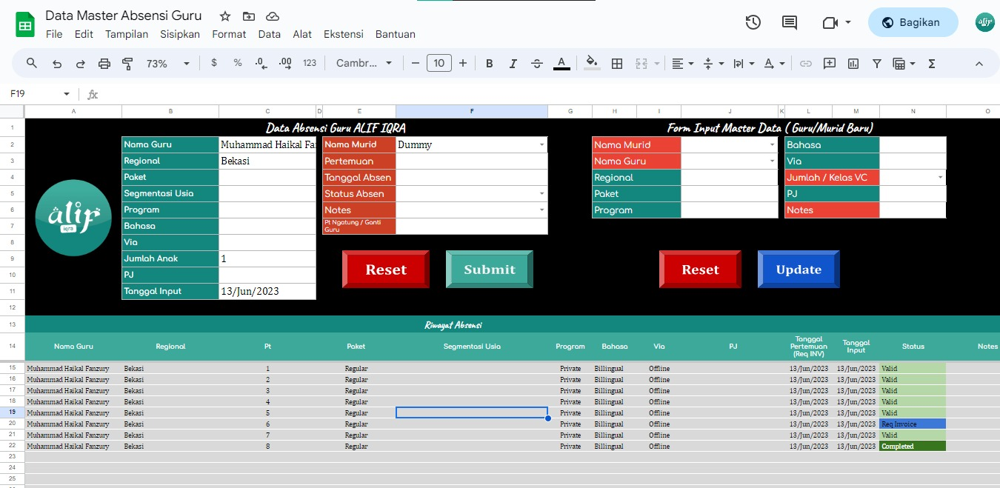

HRD Alif Iqra
Sistem Absensi Guru
Mengubah format absensi lama menjadi sistem input dan tracking yang lebih jelas menggunakan Google Sheets dan Google Apps Script.
- Form input master data guru dan murid.
- Status absensi lebih mudah dipantau dan divalidasi.
- Struktur data disiapkan untuk visualisasi dashboard.
Google Sheets
Apps Script
Data Entry